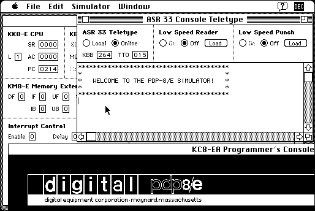

Download
pdp8e_simulator_1.5.1.zip (823K) PDP-8/E Simulator 1.5.1 repackaged into a zipped hfs disk image and checksum file. The disk image can be mounted with Mini vMac.
pdp8e_simulator_1.5.sea.hqx (1.6M) PDP-8/E Simulator 1.5 in the original format.
pdp8e_simulator_1.5.1.sea.hqx (1M) PDP-8/E Simulator 1.5.1 update in the original format.
os8_system_disk.sea.hqx (383K) updated OS/8 System Disk in the original format.
copyright: Bernhard Baehr
mod date: Apr 30, 2006
license: GPL
official url :
MPDP-8/E Simulator
An “emulator for the Digital Equipment PDP-8/E minicomputer”. For “System 2 to Mac OS X”. Linked page has a screen shot of it running within Mini vMac, and native in OS X at the same time. Source code is available (below).

If you find these downloads useful, please consider helping the Gryphel Project, which hosts them.
Download Source
pdp8e_sim_1.5.1_sources.zip (1M) PDP-8/E Simulator 1.5.1 source repackaged into a zipped hfs disk image and checksum file. The disk image can be mounted with Mini vMac.
pdp8e_sim_1.5_sources.sea.hqx (344K) PDP-8/E Simulator 1.5 source in the original format. (Combine with 1.5.1 update above.)
Here are the md5 checksums for the downloads, signed with Gryphel Key 5:
--------- GRY SIGNED TEXT --------- 367a4d3ea6924c60d8aba66b09d8de2d pdp8e_simulator_1.5.1.zip 7ecf348c9b4a4ff06bf2a1d316535fae pdp8e_simulator_1.5.sea.hqx 95ca50f84d6ab99c9189aebabaaba504 pdp8e_simulator_1.5.1.sea.hqx 2442f442baeda527c89592582a8d95c6 os8_system_disk.sea.hqx c457ab1d0b1928d66bd8d7799e3e85ff pdp8e_sim_1.5.1_sources.zip 0b334584915969f3a68ba0815011aa0f pdp8e_sim_1.5_sources.sea.hqx ------- BEGIN GRY SIGNATURE ------- Gry/4Xa8CFcUzxdN/IMI9fAVMCu26ROMG7377c6FuH1YfTOwcjF6lQ3pybsQ7nyv ornmG39P/T2MhoSGPBv4FPsk/oFJ7oD1I76/8FxVTaHXDFKFxUJoiJpr/mhgQcD8 zki9HRdNNa9YfYTDH2t+0hi+PSdNiw/FrHG6DQJKS7UJucPuNHuPfIYFZj0HTH6Y -------- END GRY SIGNATURE --------